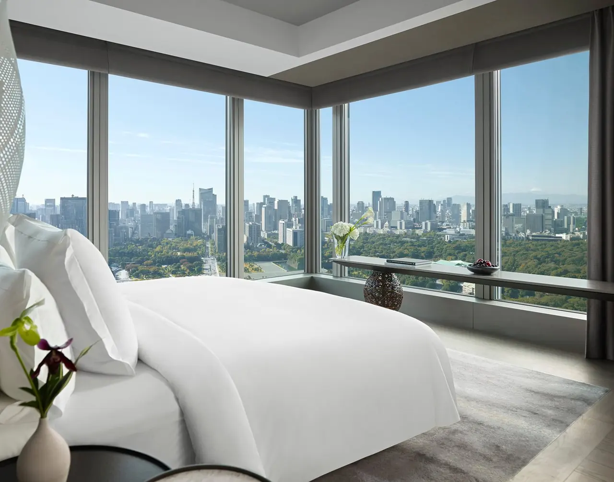
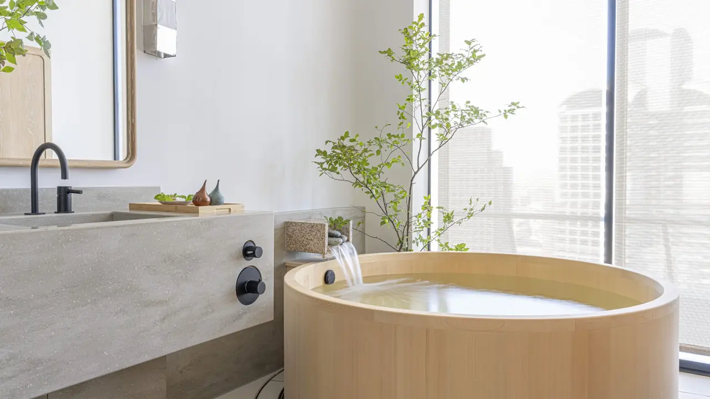

We've curated the ultimate Japan itinerary, checking into the Four Seasons hotels in Tokyo, Kyoto and Osaka. From sky-high views and backstreet dining to temple visits and calligraphy lessons, this journey is full and the hotel stays consistently excellent in their own distinct ways.
Here's a run-through of where you'll go, what you'll experience, and why these hotels make each city even more extraordinary.
Tokyo: Where Tradition Meets Tomorrow
Tokyo hits at full speed, and the Four Seasons Otemachi keeps pace. The gym, spa, and the top-floor bar Virtù set the tone: high standards and even higher views. Your first evening begins with cocktails at one of Asia's 50 Best Bars, then dinner at Pigneto downstairs to settle in.

Four Seasons Tokyo at Otemachi
Sky-high luxury with Virtù bar (one of Asia's 50 Best Bars), exceptional spa, and Pigneto restaurant. The perfect base to explore Tokyo's endless wonders.
Enquire About This PropertyOver the next few days, criss-cross the city: shopping in Shibuya and Omotesando, wandering through Sensoji Temple in Asakusa, looking out over the city from the Sky Tree, and joining a glass-cutting workshop to create your own Edo Kiriko glasses.


The cultural deep dive continues with a sumo morning practice, a Kagura dance performance, ramen at Michelin-starred Tsuta, and a visit to teamLab's mesmerising digital art museum.
Exclusive Experience
A private sushi experience with Chef Yoshi—you'll have the chance to make your own rolls under his instruction, using fish he selected that morning at the market. From there, board the bullet train to Kyoto.
Insider Tip
Book ahead for Sushi Yuu in Nishi-Azabu – it's a discreet setting with exceptional sushi. For something quicker, the Tokyo Station basement has some of the best casual sushi in the city.
Kyoto: The Heart of Traditional Japan
Kyoto brings a change of pace. The Four Seasons here sits quietly beside a traditional pond garden, and the spa is known for its Japanese treatments. Arrive and head straight to dinner at Emba Kyoto Grill for flame, smoke and well-aged steak.


Four Seasons Kyoto
Set beside an 800-year-old pond garden with a spa renowned for its authentic Japanese treatments. The perfect sanctuary after days of temple exploration.
Enquire About This PropertyThe next morning starts with forest bathing and views across the city from the mountaintop. Later, wander through Nishiki Market, eat from food stalls, visit Kiyomizudera Temple, and finish the day with dinner at Sodoh Higashiyama, followed by a private Geiko and Maiko performance—dancing, conversation, and traditional games.
Your final day in Kyoto is packed: the Golden Pavilion, the Arashiyama Bamboo Forest, lunch at Tenryuji Shigetsu (a Buddhist temple meal), and a traditional tea ceremony in a local master's house. Join a calligraphy workshop to write your name in three different Japanese scripts before boarding the train to Osaka.
Insider Tip
Pick up Kyoto-style spices at Ochanoko Saisai in Nishiki Market—especially the mashi sauce and chilli blends. Near the bamboo forest, Kumonocha Café does beautiful cakes with a Japanese twist.
"The private Geiko and Maiko performance was unforgettable—dancing, learning about their fascinating lives, and playing traditional games."
Osaka: Japan's Kitchen
Four Seasons Osaka is brand new and it shows—clean lines, strong design, and fantastic restaurants and bars on the top floor with views to match. First drinks are served in a tucked-away bar behind a hidden door (accessed via a discreet button), followed by fantastic French food at Jardin.

Four Seasons Osaka
Brand new with stunning design, a secret speakeasy bar, rooftop dining at Jardin, and spectacular city views. Modern Japanese luxury at its finest.
Enquire About This PropertyExplore Osaka's incredible vintage shops—it's one of the best cities in Japan for second-hand finds. From Momotaro Jeans for premium denim to Brand Off for pre-owned luxury with impeccable standards.
Unforgettable Experience
Visit the Sasuke knife workshop—family-run, known globally and deeply rooted in tradition. Leave with your own engraved knives. Then, lunch is served in the home of a renowned bonsai grower, prepared by a Michelin-starred chef and paired with sake made by his daughter.

Insider Tip
Osaka delivers on retail. Look for Momotaro Jeans for premium denim, Issey Miyake Semba for bold design, and Brand Off for pre-owned luxury with impeccable standards.